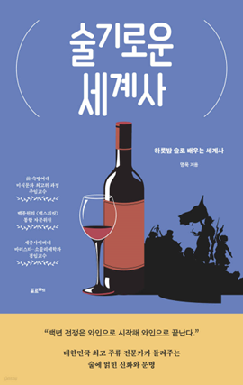

학습 목표
- 1. 술이 세계 역사의 흐름에 어떤 영향을 미쳤는지 파악할 수 있다.
- 2. 서로 연관 없어 보이는 술들이 유사한 부분이 있다는 것을 알게 되면 각 문화의 연결성을 이해하고 파악할 수 있다.
교육 특징
-
1. 명욱 교수와 술잔 기울이며 세계사와 교양을 한 번에 잡자!
술에 관한 재미있는 에피소드로 시기별 중요 포인트를 체크할 수 있고, 술에 대한 관심이 많은 사람이 듣게 되면 역사나 신화, 세계사까지 자연스럽게 연결되도록 구성
-
2. 전문 교수와 아나운서의 대담 형식으로 영상 구성
명욱 교수의 재미있는 입담과 아나운서의 깔끔하게 정리하는 형식의 구성으로 재미를 쫓다보면 정보까지 따라오게 되는 유쾌하고 흥미로운 강의
-
3. ‘술기로운 세계사’ 도서 제공을 통한 학습 내용 복기
교수님의 ‘술기로운 세계사’ 도서를 제공하여 복습의 기회 제공
교육 대상
- 1. 기업체 전 임직원
- 2. 술에 얽힌 역사나 신화에 관심있는 직장인
- 3. 세계사에 관심있는 직장인
강의 목차
- 제1장 술의 기원, 술은 공룡과 함께 탄생했다?
- 제2장 와인의 시작, 최초의 와인 발상지는 스탈린의 고향이다.
- 제3장 그리스와 로마, 그리고 프랑스 와인, 와인의 신 디오니소스는 외도로 태어났다.
- 제4장 중세와 근대, 한 병에 6000만 원, 최고가 와인 산지 부르고뉴 와인의 배경
- 제5장 위스키의 탄생, 위스키는 원래 치료제였다.
- 제6장 위스키 근대와 만나다, 위스키가 코냑을 이길 수 있었던 이유
- 제7장 근대 역사로 이어지는 일본 위스키, 일본 위스키 최고가는 1병에 9억 원이다.
- 제8장 일본의 사케와 청일전쟁, 일본 사케는 청일전쟁으로 발전했다.
강사 소개

강사명
명욱 교수
경력
前 숙명여대 미식문화 최고위 과정 주임교수
現 세종사이버대학교 바리스타·소물리에학과 겸임교수
연세대학교 상남경영원 주류 인문학 및 트렌드 강의
미래교육원 미식문화 최고위 과정 교육 원장 역임
〈술자리 인문학〉 유튜브 채널 운영 등
現 세종사이버대학교 바리스타·소물리에학과 겸임교수
연세대학교 상남경영원 주류 인문학 및 트렌드 강의
미래교육원 미식문화 최고위 과정 교육 원장 역임
〈술자리 인문학〉 유튜브 채널 운영 등
참고 도서

도서명
술기로운 세계사
저자명
명욱
도서소개
명욱 교수는 대한민국 최고의 주류 인문학 전문가이자
칼럼니스트(백종원의 [백스피릿] 통합 자문)입니다.
책 『술기로운 세계사』는 저자가 모은 술과 관련된 흥미로운 이야기와
술에 얽힌 세계사를 정리한 것입니다.
이 책은 술과 관련된 역사, 신화, 문화, 전쟁, 산업을 폭넓게 다루며,
술이 발명되면서 역사의 흐름이 어떻게 바뀌었는지를 설명합니다.
세계사를 어려워하는 독자를 위해 재미있는 일화를 담아,
술이 인류와 역사를 잇는 다리라는 새로운 관점을 제시합니다.
칼럼니스트(백종원의 [백스피릿] 통합 자문)입니다.
책 『술기로운 세계사』는 저자가 모은 술과 관련된 흥미로운 이야기와
술에 얽힌 세계사를 정리한 것입니다.
이 책은 술과 관련된 역사, 신화, 문화, 전쟁, 산업을 폭넓게 다루며,
술이 발명되면서 역사의 흐름이 어떻게 바뀌었는지를 설명합니다.
세계사를 어려워하는 독자를 위해 재미있는 일화를 담아,
술이 인류와 역사를 잇는 다리라는 새로운 관점을 제시합니다.